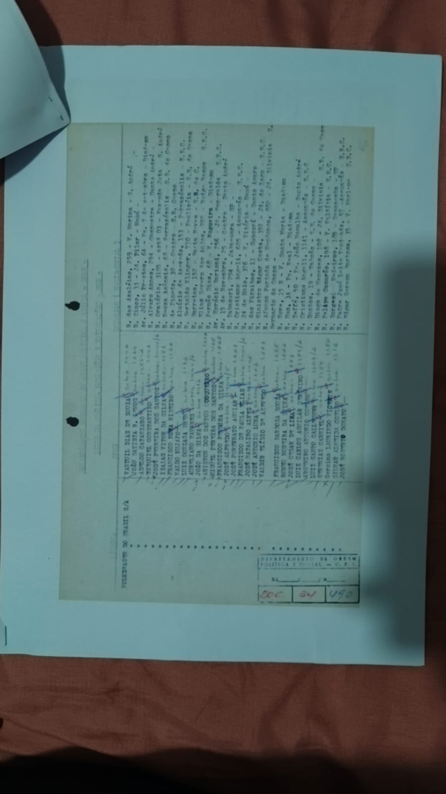
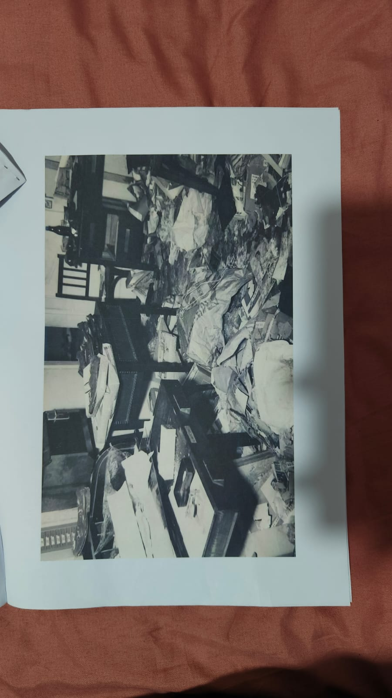
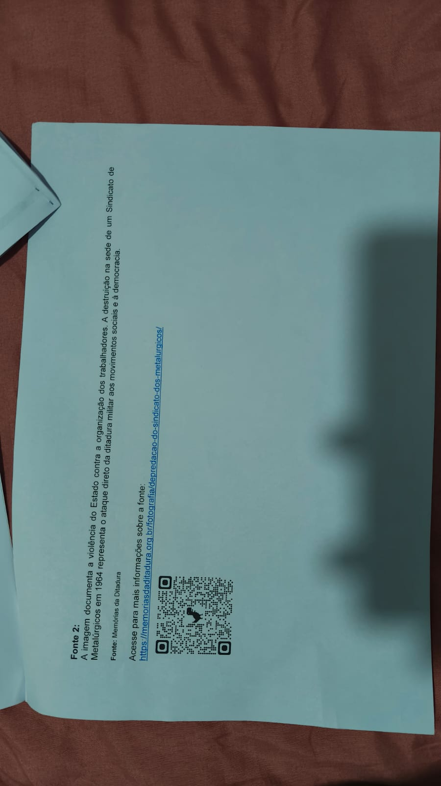

Órgãos como DOPS e SNI acompanhavam lideranças e entidades.
Brasil • Ditadura Militar • Trabalhadores
Repressão aos trabalhadores na ditadura militar brasileira
Um site interativo para investigar como o Estado monitorou, perseguiu e enfraqueceu sindicatos, greves e movimentos trabalhistas entre 1964 e 1985, com foco nas lutas dos anos 1970.
Contextualização
Trabalho, vigilância e autoritarismo
Durante a ditadura militar brasileira, o governo tratou greves e mobilizações operárias como ameaças à ordem política e econômica. Por isso, órgãos de segurança produziram relatórios, prontuários, listas de trabalhadores e registros sobre sindicatos.
A repressão não se limitava à violência física. Ela também envolvia vigilância, censura, intimidação, controle de informações, intervenção em entidades sindicais e criminalização de reivindicações por melhores salários e condições de trabalho.
“O governo considerava greves e movimentos trabalhistas uma ameaça à ordem política e econômica.” Texto de contextualização enviado
Listas e prontuários expunham nomes, locais de trabalho e informações pessoais.
A repressão buscava reduzir a capacidade de organização coletiva.
Linha do tempo interativa
Da intervenção à reorganização operária
Fontes históricas em foco
O que as fontes mostram e o que elas silenciam?

Fonte 1 • Lista
Lista de trabalhadores grevistas do ABC Paulista
A fonte registra trabalhadores de grandes empresas do ABC, como Volkswagen, Mercedes-Benz e Vilares. Segundo a análise enviada, a lista apresenta nome completo, endereço e setor de trabalho, além de se relacionar a reivindicações de reajuste salarial.
“O DOPS recebeu uma lista com 438 trabalhadores grevistas [...] que reinvindicavam reajuste salarial.”Fonte 1 — documento recebido

Fonte 2 • Fotografia
Sede de sindicato de metalúrgicos destruída
A fotografia mostra a destruição física de uma sede sindical, evidenciando violência contra a organização coletiva dos trabalhadores e ataque ao direito de atuação sindical.
“A imagem documenta a violência do Estado contra a organização dos trabalhadores.”Fonte 2 — Memórias da Ditadura

Documento oficial
Informes de vigilância sobre professores e entidades
Os documentos oficiais demonstram que órgãos de informação acompanhavam encontros, lideranças, pautas políticas e publicações. Mesmo quando tratavam de professores, ajudam a entender a lógica de vigilância aplicada a trabalhadores organizados.
“Com a presença de aproximadamente 500 pessoas [...] realizou-se o I Encontro Estadual de Professores.”Informe do SNI, 1981
Citações e evidências
Trechos das fontes e dos textos
“Órgãos de segurança monitoravam líderes dos sindicatos, faziam listas de trabalhadores ‘revoltosos’ e reprimiam manifestações.”
Contextualização“Nesta lista há o nome completo, endereço e setor em que o grevista trabalha.”
Análise da Fonte 1“Essas fontes evidenciam o ataque da ditadura militar contra os movimentos sociais e à democracia.”
Análise das fontes“Dessa forma, o regime buscava enfraquecer a organização dos trabalhadores e reduzir sua capacidade de mobilização.”
ContextualizaçãoGaleria documental
Imagens das fontes históricas
Ficha de análise de fontes históricas
Perguntas para analisar as fontes históricas
Cada bloco reúne perguntas para interpretar criticamente os documentos, jornais e fotografias da época.
Laboratório interativo
Monte sua própria análise da fonte
Texto gerado
Preencha os campos e clique em “Gerar texto”.
Quiz de interpretação
Teste sua leitura histórica
Conclusão
Ideia central
A repressão aos trabalhadores durante a ditadura militar não foi apenas uma reação a greves isoladas: foi uma política de controle social. As fontes indicam que o Estado vigiava nomes, endereços, sindicatos e publicações para enfraquecer movimentos que reivindicavam direitos.
Conclusão crítica: as fontes mostram o ataque à organização dos trabalhadores, mas precisam ser comparadas com outras evidências para recuperar também a voz dos próprios trabalhadores.
Provocação ao visitante
Quando um Estado transforma reivindicação trabalhista em caso de polícia, o que acontece com a democracia?